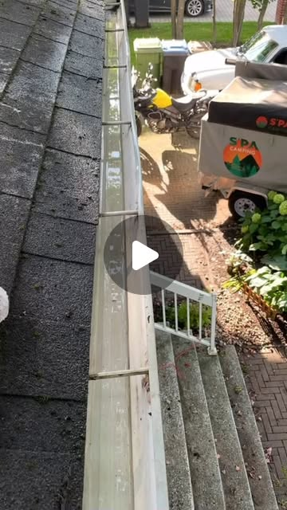
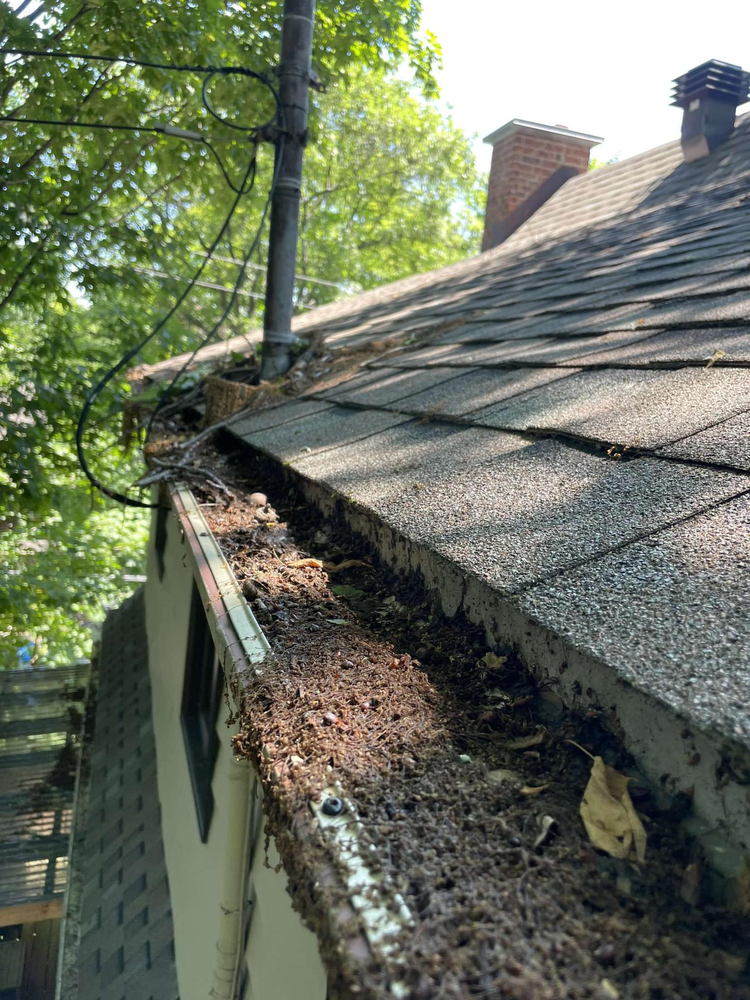
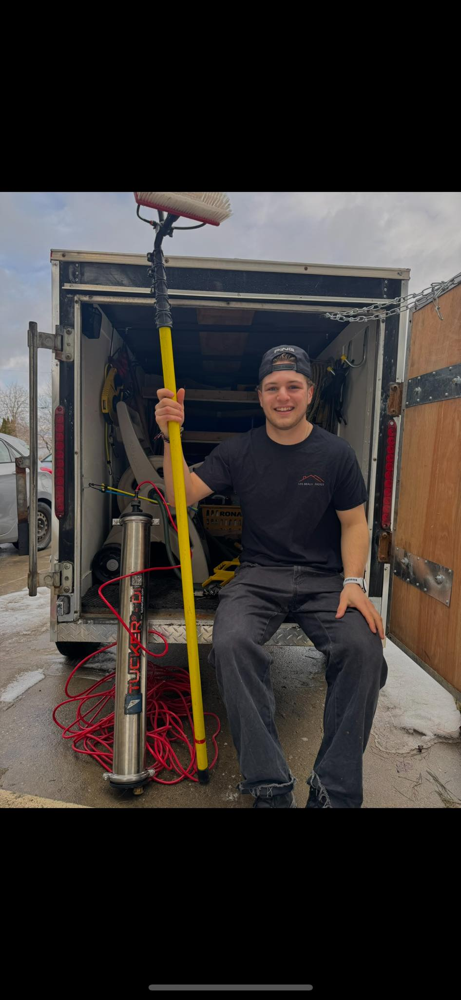

01
Nettoyage de gouttières
Vidange complète, rinçage, vérification des descentes. Pour résidences et commerces — équipement adéquat pour les hauteurs et configurations difficiles.
Soumission
gratuite
gratuite
Entretien résidentiel & commercial / Région de Lévis
Deux frères qui ont fait de l'entretien extérieur un métier d'attention. Gouttières, vitres, propriété — du travail soigné, du début à la fin.
L'approche
On n'arrive pas chez vous avec un boyau d'arrosage et un seau. On arrive avec l'équipement, la méthode, le respect du bâtiment — et l'idée qu'un travail mal fait vaut moins que pas de travail du tout.
Que ce soit vider une gouttière obstruée, redonner de la clarté à des vitres saisonnières, ou refaire briller un revêtement, l'approche est la même : on regarde, on planifie, on exécute proprement. Pas de raccourci.
Services
Vidange complète, rinçage, vérification des descentes. Pour résidences et commerces — équipement adéquat pour les hauteurs et configurations difficiles.
Système de purification d'eau avec pôle Tucker. Vitres sans dépôt, sans traînée — accès en hauteur sans échelle invasive. Offrez à votre maison une vue claire.
Nettoyage de revêtements extérieurs — vinyle, aluminium, briques. On retire la saleté, le pollen, les traces noires de moisissure. Le bâtiment respire à nouveau.
Contrats saisonniers pour résidences et commerces — on fait le tour de la propriété, on identifie ce qui doit être fait, on s'occupe du reste. Une seule personne à rappeler.
Vitrines, façades, gouttières d'édifices commerciaux. Horaires flexibles pour ne pas nuire à l'opération — soir, fin de semaine, hors heures d'achalandage.
On passe, on regarde, on prend des notes. Soumission claire — pas de surprise après coup. Si on n'est pas le bon choix pour votre besoin, on le dit franchement.
Travaux récents
Aucune retouche, aucun filtre. Ce sont des photos prises sur des chantiers réels par Jérémy et Nathan. Plus de clichés sur @entretien_lbf.



Galerie · Défilement
Défilez. Vertical devient horizontal.
Les Beaux Frères
Jérémy Couture et Nathan Lambert ont lancé Entretien LBF en 2025 avec une idée simple : faire le travail comme on aimerait qu'il soit fait chez nous. Investir dans le bon équipement, prendre le temps qu'il faut, livrer un résultat dont on est fier de mettre une photo en ligne.
Le reste, c'est de la rigueur. Soumissions claires, rendez-vous respectés, propriété laissée plus propre qu'à l'arrivée. C'est de l'entretien extérieur, mais c'est traité comme un métier.
Un travail bien fait, c'est notre signature. Et c'est la seule pub qu'on a vraiment besoin.
— Jérémy & NathanContact
Soumission gratuite, sans engagement. Appelez, écrivez ou DM — on revient avec un plan clair et un prix juste, généralement dans les 48 heures.
Téléphone
581 980-1856
→Courriel
entretien.beauxfreres
@gmail.com
@entretien_lbf
→Entretien LBF
Lévis QC
Zone desservie
Lévis · St-Romuald · Charny · St-Nicolas · St-Rédempteur · Pintendre · Lévis-Centre · Région métropolitaine de Québec sur demande